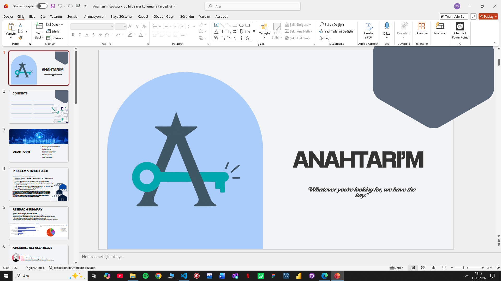

Project One
Anahtarım_projectAnahtarı’m is a user-centric real estate and vehicle classifieds platform designed to eliminate information overload and build user trust through a clean interface, advanced filtering options, multi-angle visual sliders, and seamless interaction flows.